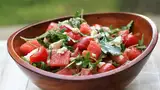

Back
watermelon feta Recipe

Description
This chunky watermelon feta salad with arugula and tomatoes is enjoyed by all.
Thanks to the watermelon, the kids like it also!
Ingredients
- 3 tablespoons olive oil
- 2 teaspoons white balsamic vinegar
- ½ teaspoon kosher salt
- 8 ounces grape tomatoes, halved
- 3 cups arugula
- 1 cup sliced red onion
- 2 pounds watermelon, cubed
- 4 ounces feta cheese, cut into 1/4-inch cubes
Steps
- Whisk olive oil, vinegar, and salt together in a large mixing bowl.
- Add tomatoes, arugula, and red onion.
- toss to coat.
- Gently stir in watermelon and feta cheese to serve.
- Enjoy